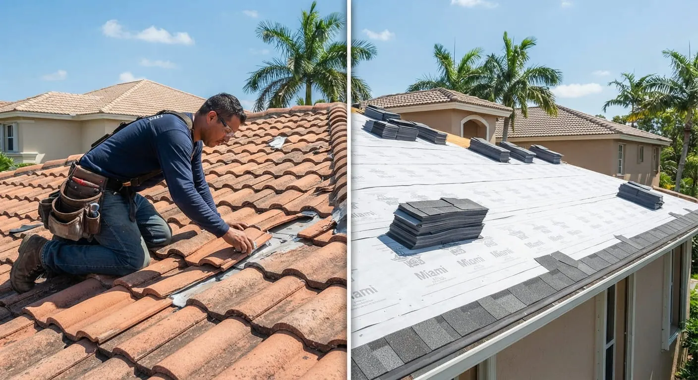

Roof Repair vs. Roof Replacement in Miami: Which Does Your Home Need?
A roof leak or visible damage does not automatically mean the whole roof must be replaced. In other cases, repeated repairs can become an expensive way to postpone work that is already necessary. The right decision depends on the roof's overall condition, the extent of damage and the findings of a qualified inspection.
When a repair may be appropriate
A targeted repair may make sense when the damage is limited to a small area and the surrounding roofing system remains in serviceable condition. Examples can include a localized flashing defect, a small number of displaced tiles or shingles, or a specific penetration that has failed. The contractor should identify the source of the problem and explain why the proposed repair addresses it.
Ask whether nearby materials are brittle, deteriorated or likely to fail during the repair. A low-cost patch is not a good value if the same area is expected to leak again or if the repair cannot be completed without damaging adjacent materials.
When replacement deserves consideration
Replacement may be worth evaluating when deterioration is widespread, leaks are recurring in different areas, storm damage affects a substantial portion of the roof, or the existing roof is approaching the end of its expected service life. A recommendation should be supported by inspection findings, photographs where appropriate and a clear explanation of why repair is not sufficient.
Do not base the decision on age alone. Material type, installation quality, maintenance history, exposure and previous repairs all affect roof condition. A qualified professional should assess the actual roof rather than assume that every roof of a particular age needs replacement.
Miami and South Florida conditions to consider
Heat, intense sun, heavy rain, humidity and seasonal storms can affect roofing materials and reveal weaknesses in flashing, drainage and roof coverings. After a storm, document visible damage from a safe location and arrange an assessment when needed. Never walk on a damaged or wet roof to take photographs.
Questions to ask before accepting a recommendation
- Where is the damage and what evidence supports the diagnosis?
- Can the affected area be repaired without compromising nearby materials?
- Are there signs of widespread deterioration or repeated water intrusion?
- What work is included in the repair or replacement proposal?
- Which materials, permits, inspections and warranties apply?
- What could change the price after work begins, and how will approval be obtained?
Compare the full cost, not just the first price
When comparing repair and replacement, consider the work's expected durability, the likelihood of additional repairs, the warranty, and the disruption involved. Ask for a written repair option when one is reasonable and a separate replacement proposal when the inspection supports it. For replacement pricing factors, see the Miami roof replacement cost guide.
What to gather before requesting an estimate
Prepare the property ZIP code, approximate roof age, roof type if known, a description of the issue and any previous repair or inspection information. The quote request form can be used to send those details for review. Submitting a request does not guarantee an inspection, quote, contractor availability or project acceptance.
Miami roof repair information · Miami roof replacement information · Browse all roofing guides
Request a Roofing Quote